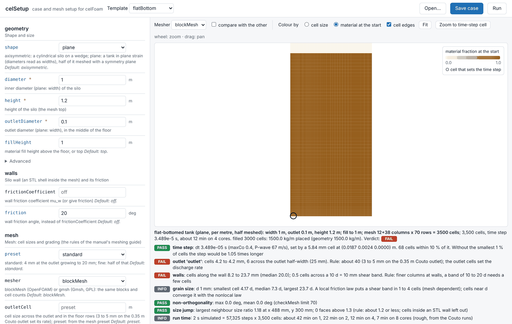
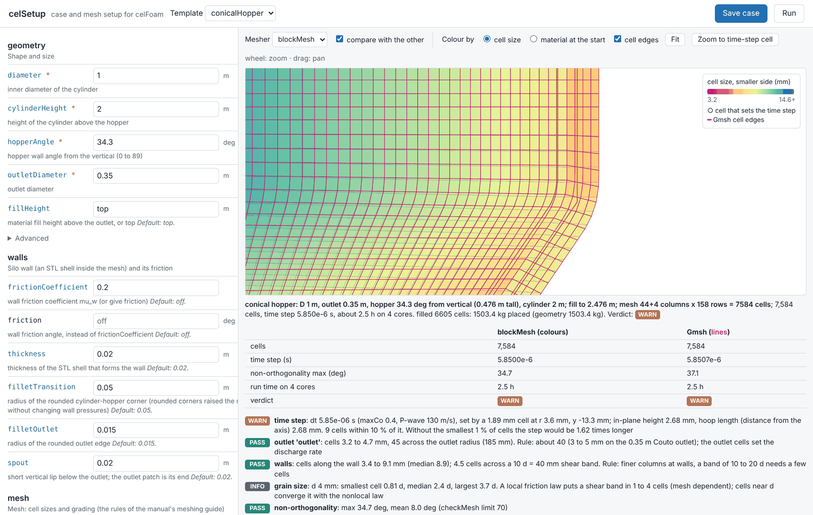
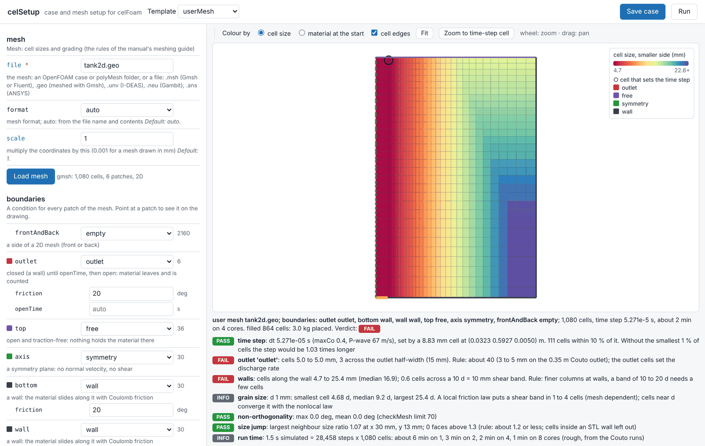

Setup tool: celSetup and celCheck
celSetup writes a complete, runnable case from a short input file or from a form in your browser: the mesh (blockMesh or Gmsh, or a mesh you bring), every dictionary, the material at the start and an Allrun that resumes. celCheck reads a case and says whether its mesh follows the rules of the meshing guide before you spend hours on a run.
Starting the setup page
celfoam setup --gui # installed (version 1.1): opens http://127.0.0.1:8765/
celfoam setup --gui my.yaml # starts from your input file
# from the source tree
source /usr/lib/openfoam/openfoam2512/etc/bashrc
tools/celSetup --gui # opens http://127.0.0.1:8765/ in your browser
tools/celSetup --gui my.yaml # starts from your input file
tools/celSetup --gui --no-browser --port 8800The page is served by a small Python program on your own computer (127.0.0.1 only) and
needs no internet connection. It needs Python 3 with numpy; meshing needs OpenFOAM loaded
(blockMesh, gmshToFoam) and, for the Gmsh mesher, Gmsh (pip install gmsh or
apt install gmsh). Close it with Ctrl+C in the terminal.
The page
- Template (top): the kind of case.
conicalHopper(a cylinder on a conical hopper, axisymmetric, or a plane hopper),flatBottom(a flat-bottomed silo, or a plane tank with a small bottom opening) anduserMesh(your own mesh). - Form (left): every input with its default, unit and a one-line description. Entries you change are marked; required ones have a star; advanced ones are folded under "Advanced". An entry with an error is outlined in red and the error is shown under the drawing.
- Drawing (right): the geometry as you type, then the real mesh about a second later, coloured by cell size or by the material at the start. Wheel to zoom, drag to pan; "Zoom to time-step cell" shows the cell that sets the time step (circled).
- Checks (below the drawing): the celCheck verdicts for this mesh (next section), the time step and the run time on 1 to 8 cores.
- Open… reads an input file or starts from an example. Save case writes the
input file (every entry with its description) and the case folder. Run starts
./Allrunin the background and shows its progress; closing the page does not stop it.

examples/planeTank.yaml): half of a 1 m wide tank with a
0.1 m opening, 3,500 cells, material up to 1 m. The checks below the drawing come from
celCheck.blockMesh or Gmsh
The templates build the same wall-aligned block layout with either mesher
(mesh: mesher: blockMesh or gmsh): curved columns that follow the hopper wall,
rows fine at the outlet and growing upwards. blockMesh is the default and gives the validated
Couto mesh exactly. Gmsh (GPL, open source) builds transfinite quadrilaterals on the same
blocks and turns them into a one-cell wedge or plane mesh, converted with OpenFOAM's
gmshToFoam: the same cells and boundaries, with interior points placed a little
differently (decision 0120). On the Couto silo both give 7,584 cells and the same time step
(5.850 and 5.851 µs).
The "compare with the other" box meshes the case with both and draws the second mesh's lines over the first, with cells, time step, non-orthogonality and run time side by side.

Your own mesh
With the userMesh template give mesh: file and press Load mesh. It takes an
OpenFOAM case or polyMesh folder, or a file OpenFOAM converts: .msh (Gmsh or
Fluent), .geo (meshed with Gmsh first), .unv (I-DEAS), .neu (Gambit),
.ans (ANSYS). scale multiplies the coordinates (0.001 for a mesh drawn in mm).
The mesh must be 2D (one cell thick, front and back patches empty) or an axisymmetric
wedge about the y axis.
Every boundary patch of the mesh is then listed. Give each one a condition; pointing at a patch shows it on the drawing. Patches whose faces show they are wedge sides, 2D sides or a symmetry plane at x = 0 are filled in for you.
| Condition | Entries | Meaning |
|---|---|---|
wall | friction (deg) | the material slides along it with Coulomb friction |
outlet | friction, openTime | a wall until openTime, then open: material leaves and is counted |
inlet | speed, startTime, endTime, density, pressure, friction | feeds fresh material at a set speed |
symmetry | no normal velocity, no shear | |
wedge, empty | the sides of a wedge or of a 2D mesh | |
free | open and traction-free |
The material fills the cells inside a box (geometry: fillXMin … fillYMax; a side
left empty has no limit). In an input file the boundaries look like this:
template: userMesh
mesh:
file: tank2d.geo
geometry:
fillYMax: 0.5
boundaries:
outlet: {type: outlet, friction: 20}
bottom: {type: wall, friction: 20}
wall: {type: wall, friction: 20}
top: {type: free}
axis: {type: symmetry}
frontAndBack: {type: empty}
examples/userTank.yaml), each boundary with its
condition; the outlet is highlighted.From the command line
Installed, write celfoam setup for tools/celSetup and
celfoam check for tools/celCheck.
tools/celSetup --template conicalHopper my.yaml # a commented input file with every entry
tools/celSetup --describe flatBottom # every entry: default, unit, meaning
tools/celSetup my.yaml myCase # write, mesh and fill the case
tools/celCheck myCase # the checks; --png for a picture, --json
cd myCase && ./Allrun # run; run again to resumeUnits are SI. The input file is a small YAML file: section: then indented
key: value lines, # comments, and {a: 1, b: 2} for short groups.
What celCheck checks
- Time step: computed exactly as celFoam does, with the cell that sets it. A warning when a few cells make it much shorter than the rest.
- Outlet: the outlet cells in grain diameters d: about 1 d or less passes. In the Couto silo (d 4 mm) cells of 3 to 5 mm gave 106 to 124 kg/s, while cells of 2 to 6 d gave rates 30 to 80 % low. The number of cells across the outlet is shown as a note (about 40 across the Couto radius). Without a grain size the rule is 3 to 5 mm.
- Walls: cells across a shear band of 10 grain diameters next to the walls.
- Grain size, non-orthogonality (as checkMesh), size jumps between neighbouring cells, and a run time estimate.
Options for a longer time step (off)
On a wedge the cell on the axis often sets the step (its hoop length is its distance from
the axis). mesh: outletColumns: even with axisColumn: 2 (conicalHopper) or
axisColumn: 2 (flatBottom) widens that column: the Couto step becomes 1.5 times longer
(standard mesh) to 2 times (fine mesh). These options are off by default and are not
validated yet: whether they change the wall pressures or the discharge has not been run
(decision 0122). They work with blockMesh only.
Limits
- User meshes: 2D and wedge only for now; 3D meshes are refused with a message.
- Plane cases report masses per metre of the whole tank (both halves).
- Templates write the material and run sections shared by all cases (see the case setup reference for every keyword they set).